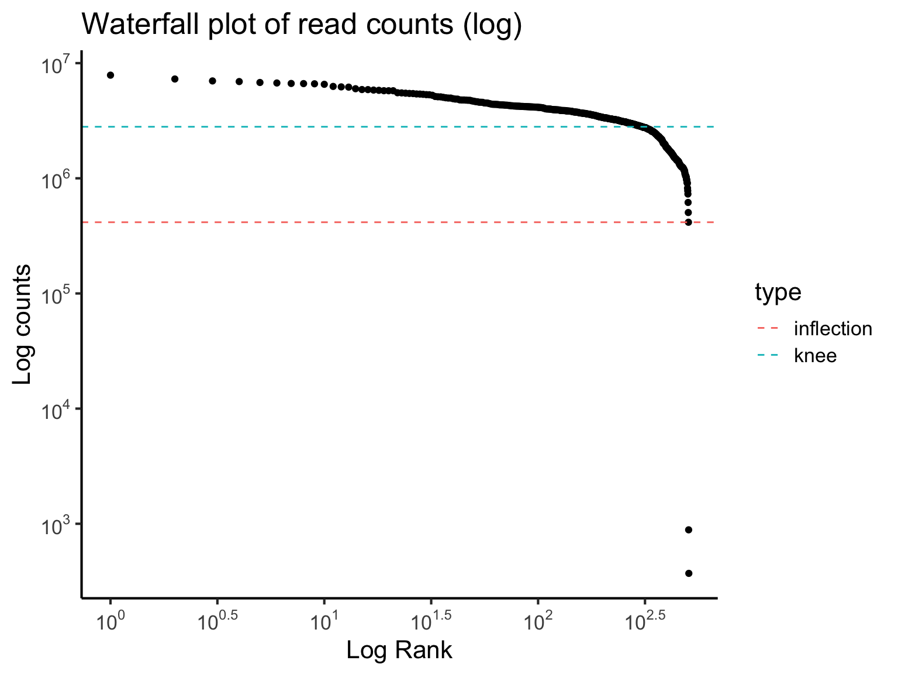
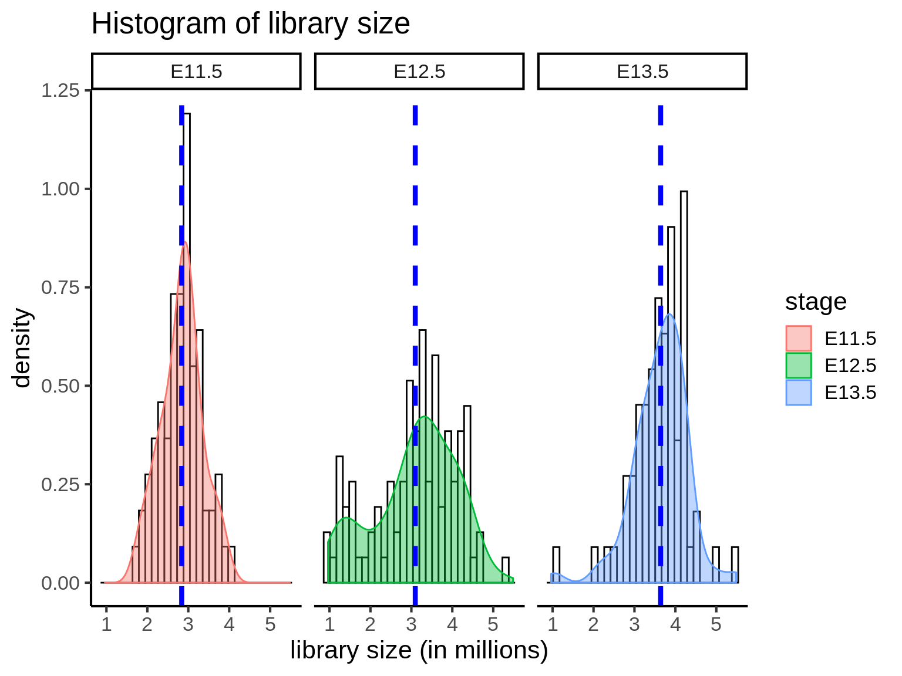
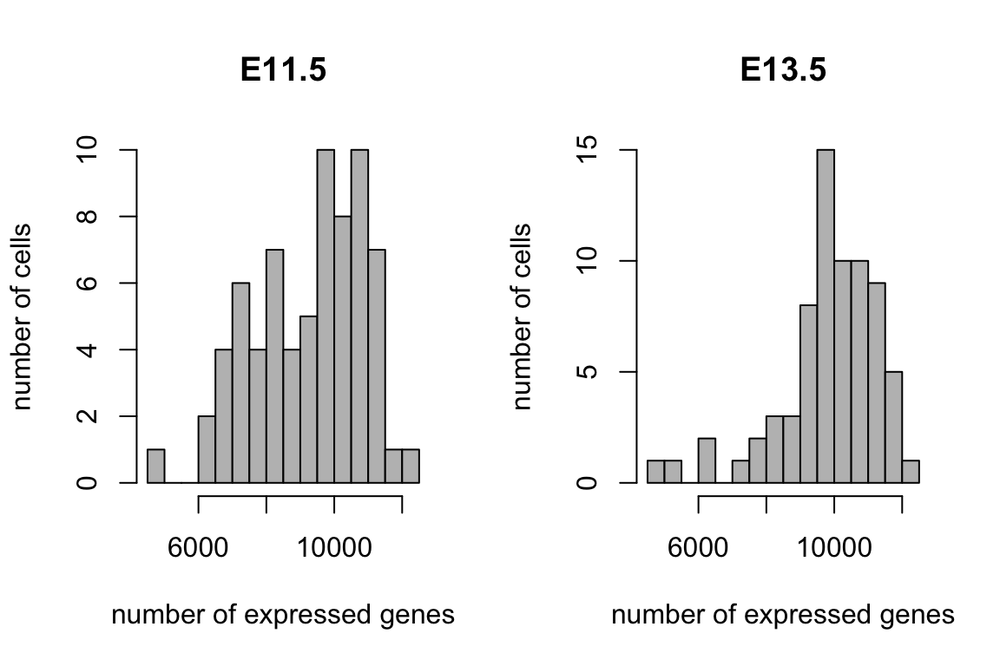
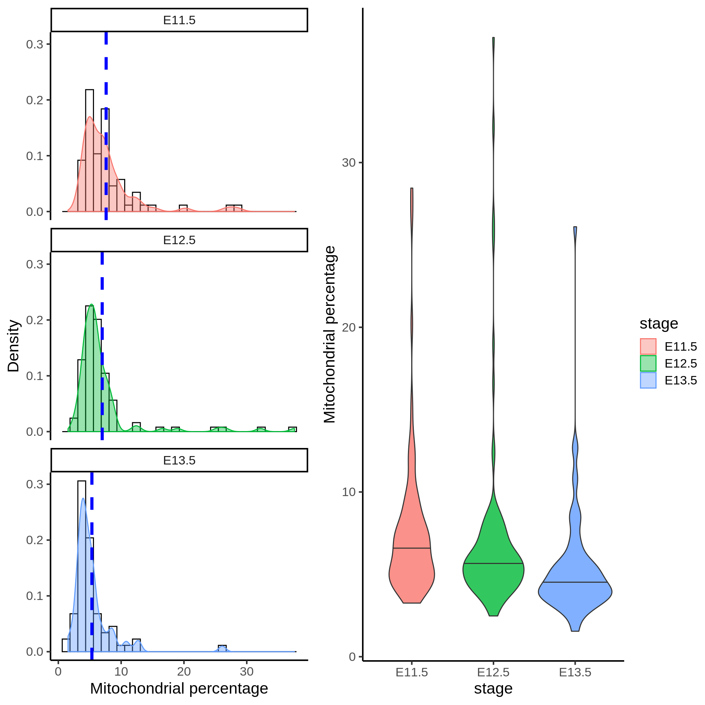
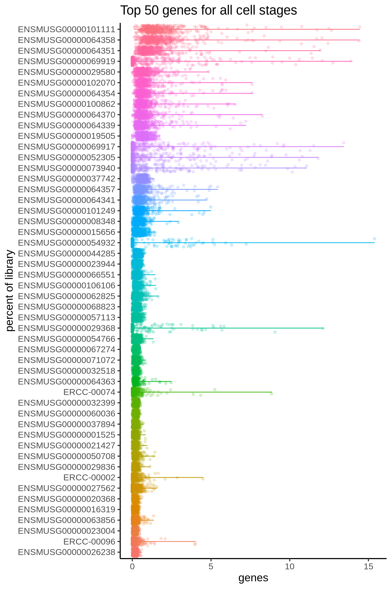

One of the first steps in single-cell RNA-seq analysis is to perform a quality check of the data you have sequenced in an experiment. This process is a necessary step before we proceed to data merging and other downstream data analyses. There are multiple quality control (QC) tools for sequencing data that we can use for both bulk and single-cell RNA-seq data. Here, we will look at some QC measures and generate a report on the quality of our single-cell data.
Load in packages required to generate the QC plots.
library(DropletUtils)
library(dplyr)
library(ggplot2)
library(scales)
library(ggpubr)
library(stringr)
library(forcats)
theme_set(theme_classic(16))For demonstration purpose, we will perform some QC checks on a single-cell mouse liver dataset generated by Su et al. (2017). This liver dataset contains 507 cells at seven developmental stages between embryonic day 11.5 and postnatal day 2.5. The cells were sequenced using the Fluidigm C1 platform and the reads are paired end. The file containing the raw count matrix is located in the data folder in the zip file you have downloaded.
The dataset of read counts is stored in a csv file (which is simply an Excel file). We can load the data into R using the read.csv() function. Here, we will use two options:
header = TRUE means that we will take the first row of the file as the column names.row.names = 1 means that we will take the first column of the file as the row names.liver = read.csv(file = "data/GSE87795_counts.csv",
header = TRUE,
row.names = 1)First, let’s check some basics of this data. This dataset contains 51918 rows and 507 columns. Each row corresponds to a gene, and each column corresponds to a cell. The first five rows and five columns of the dataset can be shown using liver[1:5, 1:5].
dim(liver)## [1] 51918 507liver[1:5, 1:5]## E11.5_C01 E11.5_C03 E11.5_C05 E11.5_C06 E11.5_C07
## ENSMUSG00000102693 0 0 0 0 0
## ENSMUSG00000064842 0 0 0 0 0
## ENSMUSG00000051951 0 0 0 0 0
## ENSMUSG00000102851 0 0 0 0 0
## ENSMUSG00000103377 0 0 0 0 0Notice that the column names of this data contain information regarding the developmental stage of each cell when it was sequenced in the experiment. We can clean up this information using a short line of code.
With some code, we can produce a frequency table of the number of cells at each developmental stage.
stage = str_split(colnames(liver), "_") %>%
sapply("[[", 1)
table(stage)## stage
## E11.5 E12.5 E13.5 E14.5 E16.5 E18.5 P2.5
## 70 100 71 99 78 58 31A simple way to make single-cell datasets manageable for analysis is to remove genes that are not expressed in any cells (i.e. genes that have zero counts across all cells). Since these genes do not containn any measurable signals, removing them does not affect the downstream analysis. In addition, a smaller dataset actually improves the performance and speed of most algorithms.
liver = liver[rowSums(liver) != 0, ]
dim(liver)## [1] 37766 507Here, we first used rowSums(liver) to calculate the total counts for each gene across all cells. rowSums(liver) != 0 then looks at if the total count is zero or not. And we will subset only those rows in the data (remember, rows of the data are genes) that are not purely zeroes.
How many genes do we have now?
The waterfall plot shows the log-count against the log-rank of each barcode. The barcodes are ranked based on the number of count each barcode has. The plots show two points of interest:
These two points potentially indicate empty droplets (background barcodes). If the number of count in each cell drops rapidly for those cells beyond knee point, then it may suggest empty reads.
barcodeRank = DropletUtils::barcodeRanks(liver)
barcodeRank.data = as.data.frame(barcodeRank)
barcodeRank.points = data.frame(
type = c("inflection", "knee"),
value = c(barcodeRank@metadata$inflection, barcodeRank@metadata$knee))
ggplot(data = barcodeRank.data, aes(x = rank, y = total)) +
geom_point() +
geom_hline(data = barcodeRank.points,
aes(yintercept = value,
colour = type), linetype = 2) +
scale_y_log10(breaks = trans_breaks("log10", function(x) 10^x),
labels = trans_format("log10", math_format(10^.x))) +
labs(title = "Waterfall plot of read counts (log)",
x = "Rank",
y = "Log counts")
Based on the waterfall plot, should we filter out any cells?
Next, we can evaluate the total library size, that is the collective read counts per cell. The library size may be used as an indicator of sequencing depth.
library.plotdf.full = data.frame(
cellName = colnames(liver),
stage = stage,
library = colSums(liver),
nGenes = colSums(liver != 0)
)
library.plotdf = library.plotdf.full %>%
dplyr::filter(stage %in% c("E11.5", "E12.5", "E13.5"))
library.stage.mean = library.plotdf %>%
group_by(stage) %>%
dplyr::summarise(stage.library.mean = mean(library),
stage.nGenes.exprs = mean(nGenes))
library.stage.mean## # A tibble: 3 x 3
## stage stage.library.mean stage.nGenes.exprs
## <fct> <dbl> <dbl>
## 1 E11.5 2838642. 9262.
## 2 E12.5 3094663. 9346.
## 3 E13.5 3639297. 9813.ggplot(library.plotdf, aes(x = library, colour = stage, fill = stage)) +
geom_histogram(aes(y = ..density..), colour = "black", fill = "white", bins = 30) +
geom_density(alpha = 0.4) +
geom_vline(data = library.stage.mean,
aes(xintercept = stage.library.mean),
colour = "blue", linetype = "dashed", size = 1.5) +
labs(title = "Histogram of library size",
x = "library size",
y = "density") +
facet_wrap(~ stage, ncol = 3) 
When we compare the distribution of librarzy size for all cells at three developmental stages, we can see that mean library size is lowest in E11.5 cells (mean=2838642) and highest in E13.5 cells (mean=3639297). E12.5 cells (mean=3094663) have a greater distribution of cells with few reads. Single cells with very few reads are likely to have failed to capture the transcriptome of a cell, and thus should be filtered.
In addition to sequencing depth, we can also filter for cells that express genes with sufficiently good coverage of the transcriptome. This is to ensure that we capture cells with not only sufficient reads but also those that have reads that are relatively evenly distributed across the transcriptome. To this end, we measure the number of uniquely expressed genes in individual cells.
ggplot(library.plotdf,
aes(x = nGenes, colour = stage, fill = stage)) +
geom_histogram(aes(y = ..density..), colour = "black", fill = "white", bins = 30) +
geom_density(alpha = 0.4) +
geom_vline(data = library.stage.mean,
aes(xintercept = stage.nGenes.exprs),
colour = "blue", linetype = "dashed", size = 1.5) +
labs(title = "Histogram of number of unique genes expressed",
x = "Number of unique genes expressed",
y = "density") +
facet_wrap(~ stage, ncol = 3) 
From above, we can see that most cells have between 9000-10,000 detected genes. This is roughly the amount expected for high-depth scRNA-seq; however, the expected value may vary between experimental protocols, sequencing depth, and cell type used. Note that, unlike library size, a “heavy tail” can be observed for each of the distribution, indicating an unequal detection of genes across populations. Filtering out cells with low number of genes identified is another way to improve the quality of the dataset.
Unhealthy or dying cells are associated with high expression of mitochondrial genes, and thus the proportion of mitochondrial expression is commonly used as a quality metric.
mito.genes <- c("ENSMUSG00000064336", "ENSMUSG00000064337", "ENSMUSG00000064338", "ENSMUSG00000064339", "ENSMUSG00000064340", "ENSMUSG00000064341", "ENSMUSG00000064342", "ENSMUSG00000064343", "ENSMUSG00000064344", "ENSMUSG00000064345", "ENSMUSG00000064346", "ENSMUSG00000064347", "ENSMUSG00000064348", "ENSMUSG00000064349", "ENSMUSG00000064350", "ENSMUSG00000064351", "ENSMUSG00000064352", "ENSMUSG00000064353", "ENSMUSG00000064354", "ENSMUSG00000064355", "ENSMUSG00000064356", "ENSMUSG00000064357", "ENSMUSG00000064358", "ENSMUSG00000064359", "ENSMUSG00000064360", "ENSMUSG00000064361", "ENSMUSG00000065947", "ENSMUSG00000064363", "ENSMUSG00000064364", "ENSMUSG00000064365", "ENSMUSG00000064366", "ENSMUSG00000064367", "ENSMUSG00000064368", "ENSMUSG00000064369", "ENSMUSG00000064370", "ENSMUSG00000064371", "ENSMUSG00000064372", "ENSMUSG00000096105")
liver.mito = liver[mito.genes, ]
mito.plotdf = data.frame(
cellName = colnames(liver.mito),
stage = stage,
mito.percent = colSums(liver.mito)/colSums(liver) * 100
) %>% dplyr::filter(stage %in% c("E11.5", "E12.5", "E13.5"))
mito.mean = mito.plotdf %>%
group_by(stage) %>%
dplyr::summarise(mean.mito.percent = mean(mito.percent))
mito.mean## # A tibble: 3 x 2
## stage mean.mito.percent
## <fct> <dbl>
## 1 E11.5 7.61
## 2 E12.5 6.99
## 3 E13.5 5.35g1 = ggplot(mito.plotdf,
aes(x = mito.percent, colour = stage, fill = stage)) +
geom_histogram(aes(y = ..density..), colour = "black", fill = "white", bins = 30) +
geom_density(alpha = 0.4) +
geom_vline(data = mito.mean,
aes(xintercept = mean.mito.percent),
colour = "blue", linetype = "dashed", size = 1.5) +
labs(x = "mitochondrial percentage",
y = "density") +
scale_x_continuous(limits = c(0, 15)) +
facet_wrap(~ stage, nrow = 3)
g2 = ggplot(mito.plotdf,
aes(x = stage,
y = mito.percent,
fill = stage)) +
geom_violin(alpha = 0.8, draw_quantiles = 0.5) +
labs(y = "mitochondrial percentage")
ggpubr::ggarrange(g1, g2, ncol= 2, common.legend = TRUE, legend = "right")## Warning: Removed 11 rows containing non-finite values (stat_bin).## Warning: Removed 11 rows containing non-finite values (stat_density).## Warning: Removed 6 rows containing missing values (geom_bar).## Warning: Removed 11 rows containing non-finite values (stat_bin).## Warning: Removed 11 rows containing non-finite values (stat_density).## Warning: Removed 6 rows containing missing values (geom_bar).## Warning in regularize.values(x, y, ties, missing(ties)): collapsing to
## unique 'x' values
Filtering cells with greater than 10% of mitochondrial gene expression would remove cells that have abnormally high mitochondrial gene expression.
As well as the above metrics, it is often instructive to know the proportions of the reads consumed by the top 50 expressed genes. Moreover, an assessment of the top gene list before and after filtering can give you a good indication of whether the filtering has been successful, as the top genes are often occupied by mitochondrial genes from unhealthy cells.
liver.percent = sweep(liver, 2, STATS = colSums(liver), FUN = "/") * 100
liver.percent %>% colSums %>% head## E11.5_C01 E11.5_C03 E11.5_C05 E11.5_C06 E11.5_C07 E11.5_C09
## 100 100 100 100 100 100liver.percent.split = split.data.frame(x = t(liver.percent), f = stage) %>% lapply(t)
liver.percent.split.rowMeans = liver.percent.split %>% lapply(rowMeans)
e115.top50 = liver.percent.split.rowMeans$E11.5 %>% sort(decreasing = TRUE) %>% head(50) %>% names
e115.top50## [1] "ENSMUSG00000101111" "ENSMUSG00000064358" "ENSMUSG00000064351"
## [4] "ENSMUSG00000019505" "ENSMUSG00000029580" "ENSMUSG00000064370"
## [7] "ENSMUSG00000064354" "ENSMUSG00000102070" "ENSMUSG00000037742"
## [10] "ENSMUSG00000064339" "ENSMUSG00000101249" "ENSMUSG00000062825"
## [13] "ENSMUSG00000100862" "ENSMUSG00000106106" "ENSMUSG00000063632"
## [16] "ENSMUSG00000066551" "ENSMUSG00000008348" "ENSMUSG00000068823"
## [19] "ENSMUSG00000064341" "ENSMUSG00000064357" "ENSMUSG00000057113"
## [22] "ENSMUSG00000023944" "ENSMUSG00000044285" "ENSMUSG00000069662"
## [25] "ENSMUSG00000037894" "ERCC-00002" "ERCC-00074"
## [28] "ENSMUSG00000054766" "ENSMUSG00000016559" "ENSMUSG00000001525"
## [31] "ERCC-00096" "ENSMUSG00000071072" "ENSMUSG00000064363"
## [34] "ENSMUSG00000032518" "ENSMUSG00000060036" "ENSMUSG00000057666"
## [37] "ENSMUSG00000015656" "ENSMUSG00000022816" "ENSMUSG00000067274"
## [40] "ENSMUSG00000021427" "ENSMUSG00000072235" "ERCC-00130"
## [43] "ENSMUSG00000071866" "ENSMUSG00000022048" "ENSMUSG00000021546"
## [46] "ENSMUSG00000046434" "ENSMUSG00000032399" "ENSMUSG00000023004"
## [49] "ENSMUSG00000058558" "ENSMUSG00000029836"e115.liver.percent = liver.percent[e115.top50, stage == "E11.5"] %>%
as.matrix %>%
reshape2::melt(varnames = c("gene.name", "cell.name")) %>%
dplyr::mutate(gene.name = fct_reorder(gene.name, value, mean))
e115.liver.percent %>%
ggplot(aes(x = gene.name, y = value, colour = gene.name)) +
geom_violin() +
geom_jitter(alpha = 0.2) +
coord_flip() +
labs(x = "percent of library",
y = "genes") +
theme(legend.position = "none")
The plot above show that there are four spike-in genes within the top 50 genes. The presence of multiple spike-ins at the top of the list suggests that the concentration of spike-ins added to the experiment may need to be optimized for subsequent experiments. Overall, the relatively flat distributions indicate good coverage of the transcriptome.
Here we will give a demonstration of how you can remove some of the cells from the dataset.
Recall in the waterfall plot, we have identified 2 outlier cells with low read counts. Here, we will illustrate how you can remove these two cells from the dataset.
In the code provided below, originally there was 507 cells in the dataset, the 2 outlier cells would have rank 506 and 507 (largest rank means least number of reads). We look at which cells has rank >= 506 and use the row index to subset the dataset. The which() function gives you the row index and the minus sign ‘-’ tells R to remove the given row index from the dataset.
Finally we should check that the dimension of the dataset is correct after filtering.
liver_new <- liver[, barcodeRank.data$rank <= 506]
dim(liver_new)## [1] 37766 506[Extension]. Try removing the cells with abnormally high mitochondrial gene expression
sessionInfo()## R version 3.6.0 (2019-04-26)
## Platform: x86_64-apple-darwin15.6.0 (64-bit)
## Running under: macOS High Sierra 10.13.6
##
## Matrix products: default
## BLAS: /System/Library/Frameworks/Accelerate.framework/Versions/A/Frameworks/vecLib.framework/Versions/A/libBLAS.dylib
## LAPACK: /Library/Frameworks/R.framework/Versions/3.6/Resources/lib/libRlapack.dylib
##
## locale:
## [1] en_AU.UTF-8/en_AU.UTF-8/en_AU.UTF-8/C/en_AU.UTF-8/en_AU.UTF-8
##
## attached base packages:
## [1] parallel stats4 stats graphics grDevices utils datasets
## [8] methods base
##
## other attached packages:
## [1] forcats_0.4.0 stringr_1.4.0
## [3] scales_1.0.0 DropletUtils_1.4.1
## [5] plyr_1.8.4 ggpubr_0.2
## [7] magrittr_1.5 viridis_0.5.1
## [9] viridisLite_0.3.0 MAST_1.10.0
## [11] ggplot2_3.1.1 cluster_2.0.9
## [13] Rtsne_0.15 mclust_5.4.3
## [15] scdney_0.1.2 edgeR_3.26.4
## [17] limma_3.40.2 dplyr_0.8.1
## [19] SingleCellExperiment_1.6.0 SummarizedExperiment_1.14.0
## [21] DelayedArray_0.10.0 BiocParallel_1.18.0
## [23] matrixStats_0.54.0 Biobase_2.44.0
## [25] GenomicRanges_1.36.0 GenomeInfoDb_1.20.0
## [27] IRanges_2.18.1 S4Vectors_0.22.0
## [29] BiocGenerics_0.30.0
##
## loaded via a namespace (and not attached):
## [1] snow_0.4-3 backports_1.1.4 Hmisc_4.2-0
## [4] blme_1.0-4 igraph_1.2.4.1 lazyeval_0.2.2
## [7] splines_3.6.0 amap_0.8-17 digest_0.6.19
## [10] foreach_1.4.4 htmltools_0.3.6 fansi_0.4.0
## [13] checkmate_1.9.3 doParallel_1.0.14 recipes_0.1.5
## [16] gower_0.2.1 R.utils_2.8.0 colorspace_1.4-1
## [19] pan_1.6 xfun_0.7 crayon_1.3.4
## [22] RCurl_1.95-4.12 lme4_1.1-21 zeallot_0.1.0
## [25] survival_2.44-1.1 iterators_1.0.10 glue_1.3.1
## [28] gtable_0.3.0 ipred_0.9-9 zlibbioc_1.30.0
## [31] XVector_0.24.0 Rhdf5lib_1.6.0 HDF5Array_1.12.1
## [34] jomo_2.6-8 abind_1.4-5 mvtnorm_1.0-10
## [37] Rcpp_1.0.1 htmlTable_1.13.1 dqrng_0.2.1
## [40] foreign_0.8-71 Formula_1.2-3 lava_1.6.5
## [43] prodlim_2018.04.18 htmlwidgets_1.3 RColorBrewer_1.1-2
## [46] ellipsis_0.1.0 acepack_1.4.1 mice_3.5.0
## [49] pkgconfig_2.0.2 R.methodsS3_1.7.1 manipulate_1.0.1
## [52] nnet_7.3-12 locfit_1.5-9.1 utf8_1.1.4
## [55] caret_6.0-84 tidyselect_0.2.5 labeling_0.3
## [58] rlang_0.3.4 reshape2_1.4.3 munsell_0.5.0
## [61] tools_3.6.0 cli_1.1.0 generics_0.0.2
## [64] broom_0.5.2 ggridges_0.5.1 evaluate_0.14
## [67] yaml_2.2.0 ModelMetrics_1.2.2 knitr_1.23
## [70] purrr_0.3.2 randomForest_4.6-14 mitml_0.3-7
## [73] dendextend_1.12.0 packrat_0.5.0 nlme_3.1-140
## [76] R.oo_1.22.0 compiler_3.6.0 rstudioapi_0.10
## [79] e1071_1.7-2 tibble_2.1.3 DescTools_0.99.28
## [82] stringi_1.4.3 lattice_0.20-38 Matrix_1.2-17
## [85] nloptr_1.2.1 vctrs_0.1.0 pillar_1.4.1
## [88] BiocManager_1.30.4 data.table_1.12.2 cowplot_0.9.4
## [91] bitops_1.0-6 R6_2.4.0 latticeExtra_0.6-28
## [94] gridExtra_2.3 codetools_0.2-16 boot_1.3-22
## [97] MASS_7.3-51.4 assertthat_0.2.1 rhdf5_2.28.0
## [100] withr_2.1.2 GenomeInfoDbData_1.2.1 expm_0.999-4
## [103] doSNOW_1.0.16 grid_3.6.0 rpart_4.1-15
## [106] timeDate_3043.102 tidyr_0.8.3 class_7.3-15
## [109] minqa_1.2.4 rmarkdown_1.13 clusteval_0.1
## [112] lubridate_1.7.4 base64enc_0.1-3